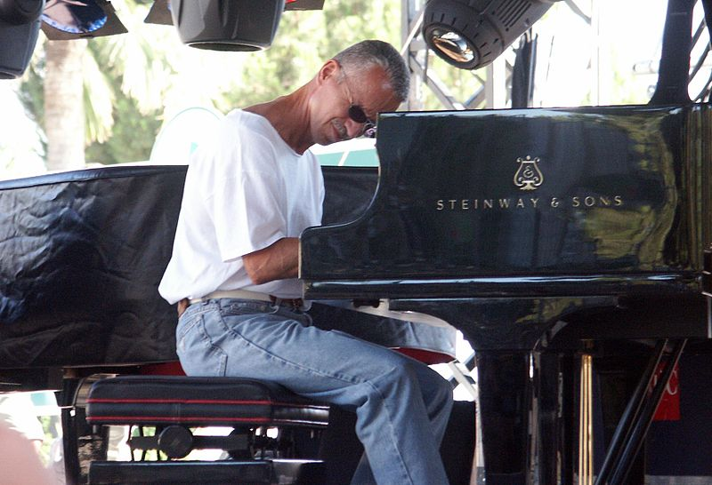

Keith Jarrett
Keith Jarrett (born May 8, 1945) is an American pianist and composer who performs both jazz and classical music. Jarrett started his career with Art Blakey, moving on to play with Charles Lloyd and Miles Davis. Since the early 1970s he has enjoyed a great deal of success as a group leader and a solo performer in jazz, jazz fusion, and classical music. His improvisations draw from the traditions of jazz and other genres, especially Western classical music, gospel, blues, and ethnic folk music. In 2003, Jarrett received the Polar Music Prize, the first (and to this day only) recipient not to share the prize with a co-recipient, and in 2004 he received the Léonie Sonning Music Prize. In 2008, he was inducted into the Down Beat Hall of Fame in the magazine's 73rd Annual Readers' Poll.
Born: May 8, 1945 (age 71), Allentown, Pennsylvania, United States
Nationality: American
Spouse: Rose Anne Colavito (m. 1980–2010)
Solo piano
 Jarrett recorded a few solo pieces live under the guidance of Miles Davis at Washington's music club The Cellar Door in December 1970. These were done on electric pianos (Rhodes and Contempo), which Jarrett was loath to perform on. Most parts of these recorded sets were released in 2007 on The Cellar Door Sessions featuring four improvisations by Jarrett. Jarrett's first album for ECM, Facing You (1971), was a solo piano date recorded in the studio. He has continued to record solo piano albums in the studio intermittently throughout his career, including Staircase (1976), Invocations/The Moth and the Flame (1981), and The Melody at Night, with You (1999). Book of Ways (1986) is a studio recording of clavichord solos. The studio albums are modestly successful entries in the Jarrett catalog, but in 1973, Jarrett also began playing totally improvised solo concerts, and it is the popularity of these voluminous concert recordings that made him one of the best-selling jazz artists in history. Albums released from these concerts were Solo Concerts: Bremen/Lausanne (1973), to which Time magazine gave its 'Jazz Album of the Year' award; The Köln Concert (1975), which became the best-selling piano recording in history; and Sun Bear Concerts (1976) – a 10-LP (and later 6-CD) box set.